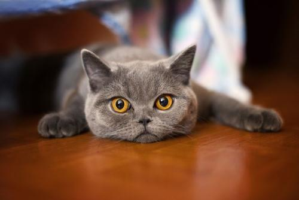

宠物饲养过程中的常见症状—食欲不振！
1) 什么是食欲不振？
食欲不振是指进食的欲望降低。如果完全的不思进食则称厌食。
2）一般症状为：
猫咪突然对以前爱吃的猫粮，罐头等食物不理不睬，精神状态沉郁，闻闻便离去，或者吃的很少甚至绝食的情况。
3）诊断方式：
用猫咪以前最喜欢吃的非常香的罐头之类做尝试，如果猫咪没有进食意愿，家长们就要注意了，恐怕猫儿生病了呢。
4）可能引起食欲不振的情况——病状分析对比：
可以通过食欲不振同时出现的其他症状来初步判断猫咪情况：
可能性一：
a. 多次呕吐，且呕吐物呈黄色；（如猫咪呕吐集合 图1或4）
b. 猫咪变得精神萎，靡食欲不振甚至绝食。
c. 出现异常的频繁饮水症状 ；
d. 伴有发烧，甚至高烧；（一般正常体温范围：38-39℃）
e. 腹泻下痢，便中带血；（猫瘟后期 严重阶段 危及生命）
f. 猫咪没有打过猫三联疫苗；（家猫一样要注射猫三联，因为主人可能带回病毒造成感染）
g. 家里来了没有未免疫的新猫口；（同时观察新猫口是否有同样症状，潜伏不发病也一样是有可能的）
食欲不振情况伴随以上情况中的三种或更多 ——> 猫瘟（也叫猫细小病毒感染或猫传染性肠炎，它是猫的一种传染病，会引起易感动物发生严重的胃肠炎，死亡率很高。）
猫咪肠胃炎
可能性二：
a. 呕吐物中多为未消化的食物；（如猫咪呕吐集合 图6）；
b. 主人喂食过量 猫咪不停的吃 暴饮暴食；
c. 喂了腐败鱼或者肉等食物 ；
d. 吃了人吃的难以消化的食物 ;
e. 猫咪呕吐后常蹲坐或爬在凉的地面上或角落里，不让触摸腹部；
f. 伴随腹泻症状（严重情况）粪便呈液状，有腥臭难闻的气味；
g. 猫咪精神沉郁、体温上升；（一般正常体温范围：38-39℃）
食欲不振情况伴随以上情况中的三种或更多 ——> 急性或慢性肠胃炎（猫咪比较容易得肠胃炎，天气原因，饲喂不当，突然换粮，着凉受寒，惊吓应激，中毒过敏等多种原因都有可能引起猫咪的肠胃炎。）
猫脂肪肝与人类完全不同，不可忽视
可能性三：
a. 以前是较胖，腹围较大的猫咪；
b. 精神不好，出现食欲不振现象，甚至绝食 ;
c. 精神不好，嗜睡不醒，继而全身无力，步履蹒跚 ；
d. 频繁呕吐 出现脱水症状 ；
f. 体温升高 呼吸急促；（猫咪正常体温是38.5-39.5~呼吸是20-30次/每分钟~心跳是120-140次/每分钟 ）
g. （病情严重）发生黄疸现象，可以从观察内耳皮肤，口腔牙龈变黄等情况，同时尿色发黄；
食欲不振伴随以上情况中的三种或更多 ——> 猫脂肪肝（指由于各种原因引起的肝细胞内脂肪堆积过多的病变。多由于猫长时间不进食，肝脏代谢脂肪转化为机体可利用的能量物质时，过量的脂肪堆积于肝细胞引起，也称为猫脂肪肝综合症）
可能性四：
a. 频繁呕吐，拒绝触摸腹部；
b. 呕吐物中常含有血液及胃粘膜碎片;
c. 出现走路打晃摇摆 精神萎靡 ；
d. 同时 呼吸急促（严重情况） ；
f. 家中有对猫咪有毒的花草植物，咬噬痕迹；或消毒液/护肤品化妆品 等被猫咪误食；
g. 给猫咪喂过人用的药品（许多药品对猫有毒 黄连素 藿香正气 还有计量过大 严重可致死）；
呕吐情况伴随以上情况中的三种或更多 ——> 中毒或过敏反应（猫咪是否误食过花草/消毒液/护肤品化妆品/人用药品均可造成中毒现象，严重可致死！）
猫-杯状病毒感染
可能性五：
a. 猫咪变得精神萎靡，食欲不振甚至绝食;
b. 打喷嚏，口腔及鼻腔分泌物增多；
c. 流涎，眼鼻分泌物开始为浆液性、4～5天后为脓性；
d. 发烧甚至高烧；（一般正常体温范围：38-39℃）
e. 口腔出现溃疡 （杯状病毒最为典型的特征）
f. 猫咪没有打过猫三联疫苗；（家猫一样要注射猫三联，因为每天主人回家可能带回病毒造成感染）
g. 家里来了没有未免疫的新猫口；（同时观察新猫口是否有同样症状，潜伏不发病也一样是有可能的）
食欲不振情况伴随以上情况中的三种或更多 ——> 猫-杯状病毒感染（猫杯状病毒感染是猫的一种多发性口腔和呼吸道传染病，又称为猫传染性鼻结膜炎。是猫的多发病之一，发病率较高，死亡率较低，但幼猫常可致死。）
可能性五：
a. 在季节交替期间（秋-冬）天气环境变化大；
b. 猫咪着凉 或夏天空调直接吹到猫咪 ;
c. 家里增添了新猫口或是新养了宠物；购买了新家具或是重新装修房子；有客人在家留宿；搬家；清洗地毯更换环境等造成的应激反应 ；
d. 猫咪喝了牛奶（经过乳糖分解的舒化奶可以喝）；
f. 最近更换了猫粮品牌 且 没有逐次减量，以合理方式更换猫粮；
g. 同时伴有呕吐，腹泻 或软便等现象；
食欲不振伴随以上情况中的三种或更多 ——> 饮食更换不合理 惊吓压力等造成应激反应 使得肠胃消化不良（胃肠未能消化、吸收，食物近于原样块速排出而成腹泻，以及一些猫咪由于肠道中缺乏分解乳糖、蔗糖、麦糖的酶，或小肠绒膜短少等先天性缺陷因素，对牛奶，糖或其它营养物质、水分等不能充分消化吸收而成腹泻）
猫咪肠胃消化不良 应对方式：
如果猫儿肠胃虚弱，出现软便现象，可常备宠物发育宝，儿童妈咪爱，乳酶生等调节肠胃有益菌群的药品，每天加入到猫咪的食物中，调整猫咪的肠胃机能。慢性肠胃疾病恢复周期较长，可能需要2-3个月方能恢复，主人应耐心调理，仔细观察宝贝们的健康状态。
猫传染性鼻气管炎（鼻支）
可能性六：
a. 阵发性咳嗽，打喷嚏，口腔及鼻腔分泌物增多；
b. 眼鼻分泌物增多初为透明液体，随后发展为粘脓性分泌物；
c. 分泌物长糊住鼻孔或眼睛，致使猫咪张嘴呼吸；
d. 突然发烧甚至高烧，且高热不退；
e. 食欲不振，精神萎靡 ;
f. 猫咪没有打过猫三联疫苗；（家猫一样要注射猫三联，因为每天主人回家可能带回病毒造成感染）
g. 家里来了没有未免疫的新猫口；（同时观察新猫口是否有同样症状，潜伏不发病也一样是有可能的）
食欲不振情况伴随以上情况中的三种或更多 ——> 猫传染性鼻气管炎（猫传染性鼻气管炎是高度接触性上呼吸道传染病，是猫的最常见呼吸系统疾病之一。病情可以很严重，尤其在幼猫可并发肺炎引起死亡。）
可能性七：
a. 出现较频繁的干呕动作；
b. 呕吐物中有毛发 或条状毛球团; （如猫咪呕吐集合 图2或3）
c. 吐完无其他异常；
d. 尤其在冬-春换季脱毛季最为频繁常见；
e. 大便较干、硬，里面带有些毛发；
食欲不振情况伴随以上情况中的三种或更多 ——> 毛球症 （猫咪清洁舔毛造成毛团集结在消化道中引起的呕吐现象）
可能性八：
a. 初期食欲旺盛，突然开始精神萎靡，食欲不振，少吃甚至不吃；
b. 大量饮水，同时尿量很多；
c. 出现消瘦，体重减轻及脱水现象；
d. 身体无力，走路摇晃；
e. （病情严重）发生黄疸现象，可以从观察内耳皮肤，口腔牙龈变黄等情况，同时尿色发黄；
食欲不振情况伴随以上情况中的三种或更多 ——> 糖尿病（猫糖尿病由胰岛素产生不足或机体细胞对胰岛素反应不良引起。）
其实猫咪食欲不佳原因还有很多，除了生病之外，长期饲喂一种饲料或食物过期变质；环境和气候变化；惊吓造成的应激反应，发情时或家庭增加新宠引起的情绪变化，甚至主人责骂威吓心情不好等方面都会造成猫咪不吃或少吃的现象。
所以当你的爱猫食欲不佳时，首先观察一下它的行为（24小时），如果属上述原因的话，停喂一、两餐或调整一下猫粮在做观察。
但如果猫咪连续24小时以上不进食的话，就要小心注意了，最好猫咪带去给宠物医生看看，发现疾病及早诊治。